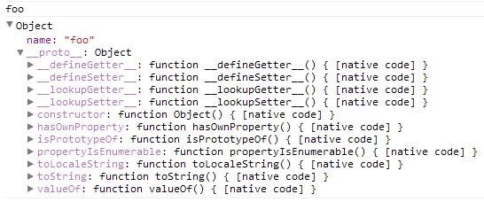

About Author

Insanehong
blog: http://insanehong.kr
twitter: @insanehong
github: insanehong.github.com
- NAVER Corporation, Front-End Engineer(2013~)
- Like Javascript, Dart, HTML5, CSS3,Responsive Web, Haroopress, Frends, Lean Startup, Open Source
- Hackrslab co-founder
- About me http://about.me/insanehong
About this Article
Date Released:
Monday, August 13 2012 4:43 PMjavascript 기초 - Object 이해하기
소개
이번 글은 자바스크립트의 핵심이라고 할수 있는 객체(Object)에 대하여 다뤄 보고자 한다. 이전 글에서도 언급 했듯이 자바스크립트는 객체기반의 스크립트 언어이며 자바스크립트를 이루고 있는거이 모든것들이 객체로 존재한다. 그렇기 때문에 자바스크립트의 기초를 다지면서 객체에 대한 제대로된 이해가 없이 "나는 hellow world"를 찍어내는 것이 목표다" 라고 하는 것은 배추 없이 김장을 담그겠다며 큰소리 치는 소리다. 객체는 그만큼 중요한 요소이기 때문에 한번에 이거다 라고 설명하기에는 무리다. 그래서 이 객체라는 녀석은 이번 글에서 뿐만아니라 앞으로 몇장에 걸쳐 나누어 다룰 예정이고 이번 글은 그 첫 시작을 알리는 글이다.
객체(Object)의 기본정의
자바스크립트에서 말하는 객체는 어떻게 보면 자바스크립트 그 자체라고 해도 무방할것이다. 계속 귀에 못이 밖히도록 반복하고 있듯이 자바스크립트 자체가 객체기반으로 돌아가는 스크립트 언어이기 때문이다. 객체지향언어를 다루어본 사람이라면 객체의 기본개념이 데이터(주채)와 그 데이터에 관련되는 동작(절차,방법,기능)을 모두 포함하고 있는 개념 이란 기본적인 내용은 익히 알고 있을 것이다. 한마디로 객체는 자신의 정보를 가지고 있는 독립적인 주체이다. 우리 주위에 보이는 컴퓨터,책상,의자,마우스,키보드 등이 모두 자신만의 특성을 가진 객체인 샘이다. 그럼 자바스크립트에서의 객체에 대해 알아보기 전에 먼저 객체가 가지는 특성에 대해 알아보도록 하겠다. 물론 이를 정확히 알고 있다고 자부한다면 skip 해도 무방하다.
프로퍼티(Property) & 메소드(Method)
객체에 대해 다루게 될때 프로퍼티와 메소드에 대한 이해가 없으면 객체를 이해할수 없다. 객체란 것은 결국 껍대기를 이루는 말이고 실제 객체를 완성하는 구성요소들은 이 프로퍼티와 메소드이기 때문이다.
즉 우리가 객체라고 부르는 것은 컴퓨터 케이스다 실제 컴퓨터를 구성하고 있는 것은 메모리,보드,파워서플라이,디스크등등을 안에 포함하고 있기에 우리는 그것을 쓸모있는 객체로서 컴퓨터 케이스를 가리키며 컴퓨터라고 부를수 있는 것이다.
그래서 자바스크립트의 객체를 다루기 전에 가장 먼저 프로퍼티와 메소드에 대해 알아보겠다.
프로퍼티(property)
ECMA5에서 프로퍼티는 객체의 일부로 이름과 값 사이 연결을 의미 라고 정의 한다. 한마디로 프로퍼티는 객체의 속성을 나타내는 접근 가능한 이름과 활용 가능한 값을 가지는 특별한 형태이다. 이는 객체를 활용함에 있어서 매우 유용한 녀석이다. 특정객체가 가지고 있는 정보를 품고 있기에 **그 객체가 가진 정보에 직접적으로 접근할 수 있게 해주기 때문이다. 물론 proto 와 같이 프로그램적으로 접근 불가능한 프로퍼티들도 존재한다. 이들에 대해서는 후에 자세히 다루도록 하겠다. 어찌되었건 프로퍼티란 기본적으로 이름과 값을 가지고 객체의 정보를 담고 있는 녀석들이다. 이 프로퍼티의 접근 연산자는 '.' 이다. 이 연산자를 통해 프로퍼티를 추가 할수도 있고 프로퍼티에 접근 할수도 있다.
var foo={}; // foo 객체 생성.
foo.a=1; // . 연산자를 이용하여 a 라는 이름의 프로퍼티를 생성하면서 1이라는 값을 할당.
var sum = foo.a+10; // . 연산자를 이용하여 foo 객체의 a 프로퍼티에 접근하여 값을 활용가능하다.
console.log(sum);
> 11
여기서 문제를 하나 내보도록 하겠다. 자바스크립트에서 프로퍼티에 아무런 값도 할당하지 않으면 어떻게 될가?
자바스크립트에서 사용하는 변수는 값을 할당하지 않고 선언만 할경우 자바스크립트 엔진이 강제적으로 undefined를 할당한다. 하지만 프로퍼티는 값이 활당되지 않으면 존재할 필요가 없는 녀석이다. 객체의 정보를 담고 있어야할 요소가 그 어떤 정보도 할당받지 않았다면 객체로서는 이 프로퍼티는 쓸모없는 녀석이기 때문이다. 그렇기 대문에 프로퍼티를 추가하면서 값을 할당하지 않으면 syntax error 이다.
프로퍼티를 추가 할때 이점을 반드시 주의 하여야 한다.
또한가지 추가적으로 반드시 기억해야할 것은 자바스크립트의 프로퍼티는 undefined나 null 을 할당한다고 삭제 되지 않는다. 프로퍼티의 삭제는 delete 라는 keyword를 사용하여야 한다.
var foo= new Object();
foo.name='foo';
console.log(foo.name);
> foo
foo.name=null;
console.log(foo.name);
> null
delete foo.name;
console.log(foo.name);
> undefined
메소드(method)
메소드는 객체가 가지고 있는 동작이다. 이 동작이란 의미에서 함수와 메소드를 구분하지 못하는 분들도 많다. 기본적으로 함수와 메소드가 서로 일련의 동작을 실행한다는 점에서 동일하기 때문이다. 하지만 메소드와 함수는 엄연하게 서로 다른 녀석이다. 메소드와 함수의 차이가 무엇인지 궁금한 분을 위해 잠깐 그 차이를 설명하고 넘어가겠다
메소드는 위에서 설명하였듯이 객체가 가지고 있는 동작이다. 메소드를 수행하기 위해서는 객체를 통해서 해당 메소드를 수행하여야 한다. 즉 그 동작을 수행하는 주체는 객체이며 그 동작을 수행하기 위해서는 객체에게 그 동작을 수행하라고 지시해야 한다. 함수는 그 동작을 수행하기 위해 객체에게 어떤을 동작을 수행하라고 명령하지 않아도 된다. 그이유는 함수자체가 그 동작을 정의한 함수객체이기 때문에 자기 자신을 수행하는 것이다. 함수객체라는 것에 대해서는 이후에 자세히 설명하도록 하겠다. 어찌 되었건 메소드는 객체를 움직이는 동작이며 그 동작을 수행하기 위해서 객체의 정보를 담고있는 프로퍼티를 사용할수 있다.
var foo={};
foo.a=1;
foo.b=2;
foo.sum=function() {console.log(foo.a+foo.b);};
foo.sum();
> 3
자바스크립트에서 사용되는 메서드는 다른 언어와 다른 재미있는 특징을 가지고 있다. Java와 같은 class 기반 객체생성 모델의 언어를 다루던 사람이라면** 메소드는 단지 meta data 일뿐이며 객체 에 속한 동작에 대한 선언일 뿐일 것이다. 하지만 자바스크립트는 다르다. 자바스크립트에서의 메소드는 각각 개별 객체로 존재 한다. 그 사용법은 동일하지만 객체에 속한 메타 데이터를 사용하는 것이 아닌 그 객체로 부터 파생되어 확장된 새로운 객체를 사용하는 것이다.
자바스크립트의 객체(Object) 구성
이제 객체란 녀석에 대해 기본적인 개념을 이해 했다면 자바스크립트에서의 객체란 무엇인지 알아보도록 하겠다. ECMA Script 에서 객체는 크게 3가지로 구분하고 있다. 1. Built-in Object 2. Native Object 3. Host Object
1. Built-in Object(자바스크립트 내장객체)
Built-in Object 에는 Global,Object, String, Number, Boolean, Date, Array, Math, RegExp, Error 등 많은 내장객체들이 있다. 이들은 자바스크립트 엔진이 구동되는 시점에서 바로 제공되며 자바스크립트코드 어디에서든 사용이 가능하다.
2. Native Object(브라우져 내장 객체)
Native Object 역시 자바스크립트가 구동되는 시점에서 바로 사용이 가능한 객체 들이다. 하지만 이들은 자바스크립트 엔진이 구성하는 기본객체라고 하기 보단 브라우져 즉 자바스크립트 엔진을 구동하는 녀석들에서 빌드되는 객체 들이다. 자바스크립트 프로그램을 작성하면서 사용하는 브라우져객체모델(BOM)과 문서객체모델(DOM)들이 이에 속한다. 이 객체들은 Built-in Object 가 구성된후에 구성된다. 이 Native Object역시 내장객체이다. Built-in Object와 동일하게 자바스크립트 구동시점부터 바로 사용가능 하다. 하지만 이들을 굳이 Native Object 라 분류한 이유는 브라우져마다 이 Native Object 를 사용함에 있어서 그 구성을 달리하는 경우가 있기 때문이다.
3. Host Object(사용자 정의 객체)
Host Object 는 말그대로 사용자가 생성한 객체 들이다. constructor 혹은 객체리터럴을 통해 사용자가 객체를 정의하고 확장시킨 녀석들이기 때문에 Built-in Object 와 Native Object가 구성된 이후에 구성되어 진다.
자바스크립트의 객체(Object) 생성
자바스크립트에서 객체를 생성하는 방법은 크게 2가지로 나누어 진다. constructor 를 이용하여 생성하는 방식과 객체 리터럴을 이용하는 것이다. 객체리터럴을 이용한 방식은JSON(Java-Script Object Notation) 을 이용하여 표현 한다.
/* constructor 를 사용하여 객체를 생성하는 예 */
var foo = new Object(); //
foo.name='foo';
console.log(foo.name);
> foo
/* JSON 방식을 사용하여 객체 리터럴 */
var foo = {
name : 'foo'
};
console.log(foo.name);
> foo
이 둘은 객체를 생성하는 방법이라는 관점에서는 동일하지만 객체의 사용이라는 방식에서는 차이가 있다. JSON 방식을 이용하면 객체리터럴이기에 단일 객체로만 활용 된다. 하지만 constructor 를 이용하면 동일한 구성을 가진 객체를 여러개 만들어 낼수 있다.
자바스크립트의 객체(Object) 참고사항.
자바스크립트에서 생성되는 객체들에게는 재미있는 사실 몇 가지가 포함되어 있다. 자바스크립트에서 생성하는 모든 객체는 Object 객체에서 파생되어 나온 객체들이란 것과 이들은 암묵적으로Array 객체를 상속한다는 것이다.
Obejct 객체
Object 객체는 Built-in 객체로서 최상위레벨의 객체((Top-Level-Object) 이다. 즉 모든 객체는 이 Object 객체에서 파생되어 나온 확장형태인 것이다. Object 객체라는 최상위 객체를 껍대기로 파생되는 객체들은 Object 객체가 가지고 있는 기본적인 구성요소를 상속받게 된다. 사실 자바스크립트의 모든 객체가 자유롭게 확장될수 있는 이유도 Object 객체가 가진 특별한 구성요소 때문이다.
Object 객체가 가진 특별한 구성요소들이란 바로 constructor, prototype 이라는 프로퍼티와 hasOwnProperty(), toString(), isPrototypeOf() 라는 메소드들이다. 이들에 대해서는 바로 다음 글에서 자세히 다룰예정이니 지금은 이런것이 있다 정도만 알고 있어도 충분하다. 자바스크립트의 모든 객체가 Object 에서 파생되었다는 것은 객체를 생성할때 사용된 생성자 함수의 prototype을 저장하는 __proto__ 를 통해 알수 있으며 객체들이 기본적으로 가지는 메소드들을 보면서 확인 할 수 있다.
var foo = {name:'foo'};
console.log(foo);

Obejct(객체)의 배열 상속
아마 지금부터 나오는 내용은 너무나도 큰 충격으로 다가올수도 있다. 자바스크립트의 객체는 곧 배열이다. 지금까지 객체에 대해 감 나와라 콩 나와라 설명해놓고 이제와서 객체가 곧 배열이다 라는 개소리를 하는 나 자신도 충격적이다.
하지만 이는 명백한 사실이다. 이를 증명할수 있는 방법은 많다. 가장 간단한 방법은 객체의 메소드는 객체 안에 존재하지 않는다. 메소드를 소유한 parent 객체는 객체에 포함된 메소드들의 참조값만을 가지고 있다. 즉 메소드들 자체도 각각 개별 객체로서 존재한다. 이 내용은 prototype을 다루면서 더 자세히 설명하겠다. 또한가지 방법은 Object Notation 이다. JSON의 key, value 방식의 객체 리터럴 구조는 프로그래밍 언어를 공부한 사람은 누구나 아는 배열 구조와 동일 하다.
특히 php 와 같은 스크립트 언어의 배열을 봐왔던 사람들은 더더욱 그럴것이다. 즉 JSON의 표현방식은 [] 라는 Array 표현의 다른 방식일 뿐이다. 실제로 객체의 프로퍼티 생성이나 참조에서 . 연산자가 아닌 []를 사용 할수도 있다.
var foo = {name:'foo'};
console.log(foo[name]);
> foo
즉 객체는 자기 자신을 이루는 요소들을 저장한 배열들의 집한체이며 이들은 chain 이라는 연결 구조를 가지고 있다.
갈무리
이번 글에서는 Object 에 대한 간단한 이해를 돕기 위해 잡다한 내용을 많이 담아봤다. 이 내용들은 앞으로 연재될 prototype,function, excution context,this 등의 내용을 이해하는데 필수적인 기본배경지식이 될것이다. 그러니 이 글을 읽고도 Object 에 대해 이해가 잘 안간다면 더많은 레퍼런스를 참고해서라도 반드시 기본개념을 정확히 이해하고 있어야 한다. 그리고 다음 글에 대한 썰을 살짝 플어보자면 위에서 잠간 언급했듯이 prototype에 대한 글이 될것이다. 그러니 위 내용에서 prototype 이 뭐지 하는 의문을 가지고 있지 않아도 된다. 그냥 그런게 있다 정도만 알고 있으면 다음 글에서 자세히 다루도록 하겠다.
by @insanehong